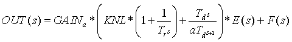
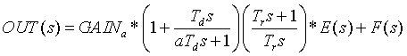
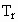
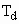
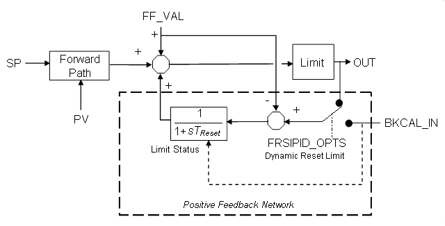

PID function block execution
The PID function block provides proportional (P) + integral (I) + derivative (D) control. Two PID equation forms are supported in the block, both forms supporting external reset and feedforward:
A conventional Standard PID with feedforward,

and Series PID with derivative filter applied only to derivative action, with feedforward

Where:
E(s) is error (SP-PV)
KNL is nonlinear gain applied to P + I terms but not to D term. Nonlinear action is activated in FRSIPID_OPTS by selecting Use Nonlinear Gain Modification.

is reset time (parameter RESET) in seconds.
is derivative time (parameter RATE) in secondsGAINa is normalized gain after scaling the parameter GAIN from PV to OUT (DeltaV works in engineering units so it is necessary that the parameter GAIN be scaled to maintain the meaning of the normalized entry).
F(s) is the feedforward contribution.
s is the Laplace notation for derivative with respect to time.
The following diagram illustrates how the nonlinear tuning parameters are used in the calculation of KNL.
Where:
NL_MINMOD is the gain applied when the absolute value of error is less than NL_GAP. To get deadband behavior, set NL_MINMOD to 0.
NL_GAP is the control gap. When the absolute value of error is less than NL_GAP, KNL = NL_MINMOD.
NL_TBAND is the transition band over which KNL is linearly adjusted as a function of error.
NL_HYST is a hysteresis value. Until absolute value of error exceeds NL_GAP + NL_HYST, KNL = NL_MINMOD. Once absolute value of error has exceeded NL_GAP + NL_HYST, absolute value of error must return to a value less than NL_GAP before KNL returns to a value of NL_MINMOD. If NL_GAP is 0, then the value of NL_HYST has no meaning (effectively assumed to be 0).
You can select the specifics of block execution by configuring I/O selection, signal conversion and filtering, feedforward calculations, tracking variables, setpoint and output limiting, PID equation structures, and block output action. The mode of the block determines setpoint and output selection.
The Use PIDPlus option in the FRSIPID_OPTS parameter is an enhancement to the PID block that provides better control for applications in the following areas:
exception reporting execution
improved integral term algorithm
enhanced saturation recovery
Use PIDPlus cannot be enabled in PID blocks assigned to H1 cards or to PID blocks converted for use in fieldbus devices.
DeltaV Books Online provides general guidance for using the PIDPlus feature. For help with assessing the benefits of PIDPlus for your particular application, please contact your local Emerson representative or sales office.
Exception reporting
One increasingly common example is control using wireless transmitters where exception reporting is used to increase battery life. Another example is a process that uses an analyzer to measure the controlled variable, meaning new updates can come at irregular intervals and the update rate is slower than the block scan rate.
The Use PIDPlus option performs its time-based calculations based on the actual time interval between measurements, not necessarily the block scan rate. When Use PIDPlus is enabled, the PID block updates its reset and derivative contribution to the control output only on scans where a new measurement is available.
A conventional PID algorithm's control performance suffers when it executes faster than new process data is available (the I and D terms continue to update causing I to integrate and D to remain unchanged between reported process value changes).
Integral term algorithm
When the Use PIDPlus option is enabled, the integral term algorithm is enhanced and results in more robust control when the reset value approaches the scan rate. In the more common case where RESET is significantly larger than the scan rate, the integral term produces nearly the same results whether or not Use PIDPlus is selected.
Enhanced saturation recovery
When Use PIDPlus is enabled, a feature referred to as enhanced saturation recovery also becomes enabled. This feature's behavior is determined by the parameter RECOVERY_FLTR. The block behavior is unchanged unless this parameter value is modified from its default value.
Saturation refers to situations where the OUT parameter is limited at the OUT_LO_LIM or OUT_HI_LIM value. The output may remain saturated during normal operation, for example, in a pressure relief application where the control valve remains closed unless a disturbance increases the pressure to the point where the valve must open to maintain the setpoint. In other applications the control valve continually regulates during normal operation. But the output may temporarily be forced into saturation by a disturbance or setpoint change.
Enhanced saturation recovery provides control over saturation recovery, that is, how soon and at what rate the output moves off the limit.
The default value of RECOVERY_FLTR is 1.0. Valid values are between 0.0 and 1.0. A value of 1.0 causes the saturation recovery identical to a PID without this parameter. When Use PIDPlus is enabled, decreasing RECOVERY_FLTR values result in a less filtered saturation recovery. For example, a value of 0.4 causes the valve in the fore-mentioned pressure relief application to come off the seat sooner and open faster, with less pressure overshoot. A value of 0.0 results in the most aggressive response.
When Use PIDPlus is enabled, the block uses the RECOVERY_FLTR value only when the output has been saturated continuously for a period equal to or longer than the reset time. This prevents noise from causing erratic behavior as the output approaches the limit.
Enhanced saturation recovery is independent of anti-reset windup, which is not affected by the Use PIDPlus option. Enhanced saturation recovery modifies the algorithm while OUT is at a limit and suspends modification on the scan after OUT moves off the limit. Anti-reset windup modifications occur when OUT is off the limit and moving toward the ARW_HI_LIM or ARW_LO_LIM value.
Enhanced saturation recovery applies only in automatic modes. Transitions out of Local Override mode are not affected by enhanced saturation recovery.
I/O selection
When you configure the PID function block, you select whether the source of the input value is a wired function block connection or a process input channel.
Input from another block — When you want the source to be an input from another function block, the input source (usually another block's output value) is connected to the IN connector on the PID function block. With a fieldbus extension, the connection to IN must be from another function block.
Input from a process input channel — When you want the source to be an input from a process input channel, you configure the Device Signal Tag (DST) of the desired channel in the IO_IN parameter. There is no IO_IN parameter in the fieldbus extension.
When IO_IN is configured and IN is connected, the I/O input channel referenced by IO_IN takes precedence and IN is ignored.
You can configure anti-aliasing filtering, NAMUR limit detection, and overrange/underrange detection for the channel parameters.
Simulation
To support testing, you can enable simulation. This allows the measurement value and status to be supplied manually or from another block.
During configuration, decide whether you want the simulated value/status to be entered manually into the function block or whether it will be supplied by another block.
When the value is entered manually:
The operator first enables simulation by selecting the SIMULATE parameter and setting the Simulate Enabled check box in the Simulate Enabled/Disabled field.
When SIMULATE_IN is not connected (status = Bad: NotConnected), the operator enters the value to be used in the SIMULATE parameter Simulate Value field. In online operation, the operator can enter a simulated status value in the Simulate Status field.
Make sure SIMULATE_IN is not connected if you want to enter the value or status manually. When SIMULATE_IN is connected, the value entered in the SIMULATE_IN Simulate Value field is used as the simulated value.
When the value/status from another block is used:
During configuration, connect SIMULATE_IN to the desired block output or parameter. Do not enter a value in the Simulate Value field of the SIMULATE_IN input; the block uses the connected value automatically.
During operation, the operator enables simulation by selecting the SIMULATE parameter and setting the Simulate Enabled check box in the Simulate Enabled/Disabled field.
Do not enter a value for the SIMULATE_IN parameter. If you enter a value and the status of SIMULATE_IN is not Bad: NotConnected, the value entered for SIMULATE_IN overrides any value you enter in SIMULATE.
There is no SIMULATE_IN in fieldbus.
Signal conversion
Direct signal conditioning — simply passes through the value accessed from the I/O channel (or the simulated value when simulation is enabled).
Indirect signal conditioning — converts the accessed channel input value (or the simulated value when simulation is enabled) to the range and units of the PV parameter (PV_SCALE).
Indirect square root signal conditioning — converts the accessed channel input value (or the simulated value when simulation is enabled) by taking the square root of the value and scaling it to the range and units of the PV parameter (PV_SCALE).
You can view the accessed value (in percent) through the FIELD_VAL parameter.
When the converted input value is below the limit specified by the LOW_CUT parameter and the Low Cutoff I/O option (IO_OPTS) is enabled (True), a value of 0.0 is used for the converted value (PV). This option can be useful with zero-based measurement devices such a flowmeters.
Increase to Close — This option has an impact when a device signal tag is configured in IO_OUT. Increase to Close causes the milliamp signal on the analog output channel to be inverted in Man mode (and in Auto mode). That is, a full scale value on OUT will result in 4 mA on the channel. When IO_OUT is configured, the OUT value is the implied valve position and is not inverted when Increase to Close is True.
You can set I/O options in Out of Service mode only.
Feedforward Calculation
You can activate the feedforward function with the FF_ENABLE parameter. When FF_ENABLE is True, the feedforward value (FF_VAL) is scaled (FF_SCALE) to a common range for compatibility with the output scale (OUT_SCALE). A gain value (FF_GAIN) is applied to achieve the total feedforward contribution.
Tracking
You can specify output tracking with control options and parameters. You can set control options in Out of Service mode only.
The Track Enable control option (CONTROL_OPTS) must be True for the track function to operate. When the Track in Manual control option is True, tracking can be activated and maintained when the block is in Man mode. When Track in Manual is False, tracking is disabled in Manual mode. Activating the track function causes the block's actual mode to go to Local Override (LO).
The tracking value parameter (TRK_VAL) specifies the value to be converted and tracked into the output when the track function is operating. The track scale parameter (TRK_SCALE) specifies the range of TRK_VAL.
When the track control parameter (TRK_IN_D) is True and the Track Enable control option is True, the TRK_VAL input is converted to the appropriate value and output in units of OUT_SCALE.
Setpoint and output limit constraints
During download OUT_HI_LIM, OUT_LO_LIM, SP_HI_LIM, and SP_LO_LIM are set to their configured values. If you have not changed these values from their defaults they are set as follows during the first execution of the block:
OUT_HI_LIM is set to OUT_SCALE(EU100)
OUT_LO_LIM is set to OUT_SCALE(EU0)
SP_HI_LIM is set to PV_SCALE(EU100)
SP_LO_LIM is set to PV_SCALE(EU0)
During runtime the limits are restricted as follows:
OUT_HI_LIM is restricted to OUT_SCALE(EU100) + 0.1 × (OUT_SCALE(EU100) - OUT_SCALE(EU0)).
OUT_LO_LIM is restricted to OUT_SCALE(EU0) - 0.1 × (OUT_SCALE(EU100) - OUT_SCALE(EU0)).
SP_HI_LIM is restricted to PV_SCALE(EU100) + 0.1 ×( PV_SCALE(EU100) - PV_SCALE(EU0)).
SP_LO_LIM is restricted to PV_SCALE(EU0) - 0.1 × (PV_SCALE(EU100) - PV_SCALE(EU0)).
The SP or OUT parameters are not changed as a result of changing the scale or limits. However, if OUT violates the new limits OUT is forced within the limits on the next execution of the block.
Setpoint selection and limiting
Setpoint selection is determined by the mode. The following diagram shows the method for setpoint selection:
You can limit the setpoint by configuring the SP_HI_LIM and SP_LO_LIM parameters. In Cas mode, the setpoint comes from the CAS_IN input. In Auto mode, the setpoint is adjusted by the operator. You can limit the setpoint rate of change by configuring the SP_RATE_UP and SP_RATE_DN parameters.
Output selection and limiting
Output selection is determined by mode. In Auto, Cas, and RCas modes, the output is computed by the PID control equation. In Man and ROut modes, the output can be entered manually.
If the IO_OUT parameter is defined for direct output, use any connection to OUT for calculation purposes only (for example, an input to a calculation block).
You can limit the output by configuring the OUT_HI_LIM and OUT_LO_LIM parameters.
Bumpless transfer and setpoint tracking
SP-PV Track in LO or IMan
SP-PV Track in Man
SP-PV Track in ROut
When one of these options is set, the SP value is set to the PV value while in the specified mode.
Use PV for BKCAL_OUT
When this option is not selected, the working setpoint (SP_WRK) is used for BKCAL_OUT.
With the Use PV for BKCAL_OUT control option, the BKCAL_OUT value tracks the PV value. A master controller whose BKCAL_IN parameter receives the slave PID block's BKCAL_OUT in an open cascade strategy forces its OUT to match BKCAL_IN, thus tracking the PV from the slave PID block. If the master is another PID, then if the master PID has selected Dynamic Reset Limit in FRSIPID_OPTS the external reset portion of the master PID now uses the PV of the secondary as its input. This provides an automatic adjustment of reset action in the master based on the performance of the slave.
You can set control options in Out of Service mode only.
PID Equation Structures
Parameter STRUCTURE in the PID is used to select which of the three PID actions (Proportional, Integral and Derivative) are active and how the actions are applied.
PID Action on Error — Proportional, integral and derivative action are applied to the error (SP - PV). If RATE is non-zero, a setpoint change will exhibit both a proportional and derivative kick. This structure is typically used to get fastest possible setpoint response when derivative action is used (RATE>0) and RATE is not so large as to make the resultant kick too great. A small SPFILTER value or SP RATE limiting can be used to reduce the worst case kick.
PI Action on Error, D Action on PV — Proportional and integral action are applied to error; derivative action is applied to PV. A setpoint change will exhibit a proportional kick.
I Action on Error, PD Action on PV — Integral action is applied to error; proportional and derivative action are applied to PV. There is no proportional or derivative kick on a setpoint change.
PD Action on Error — Proportional and derivative actions are applied to error; there is no integral action. This structure results in a steady state offset of PV from SP. The size of the offset is determined by the GAIN of the PID and the process gain. Offset is typically adjusted with BIAS of the PID. A setpoint change will exhibit a proportional and derivative (if RATE>0) kick.
Use CONTROL_OPTS selection Act on IR with PD Action on Error to avoid process bumps when SP = PV and the MODE changes from MAN to AUTO.
P Action on Error, D Action on PV — Proportional action is applied to error; derivative action is applied to PV; there is no integral action. This structure will result in a steady state offset of PV from SP; the size of the offset will be determined by GAIN of the PID and the process gain. Offset is typically adjusted with BIAS of the PID. A setpoint change will exhibit a proportional kick.
ID Action on Error — Integral and derivative action are applied to error; there is no proportional action. This structure is typically selected for use in integral-only applications (RATE=0). It is also used in cases where the process exhibits the tendency to first move in the opposite direction from its final steady state value. There is a derivative kick on an SP change.
I Action on Error, D Action on PV — Integral action applied to error; derivative action applied to PV; there is no proportional action. This structure is typically selected for use in integral-only applications (RATE=0). It is also used in cases where the process exhibits the tendency to first move in the opposite direction from its final steady state value. There is no derivative kick on an SP change.
Two Degrees of Freedom Controller — Two parameters (BETA and GAMMA) can be adjusted to determine the degree of proportional (BETA) action and derivative (GAMMA) that will be applied to SP changes. The range for BETA and GAMMA is 0-1. BETA=0 means no proportional action is applied to SP change. BETA=1 means full proportional action is applied to SP change. GAMMA=0 means no derivative action applied to SP change. GAMMA=1 means full derivative action is applied to SP change. For values greater than 0 and less than 1, the number represents the decimal fraction of the action applied to SP change. This structure then can be used to get any of the structures that include all three (actions) with adjustable action on SP changes for proportional and derivative action.
If a structure other than Two Degrees of Freedom Controller are used, the block automatically uses values as follows for BETA and GAMMA.
|
Value of STRUCTURE |
Value used by the block for BETA |
Value used by the block for GAMMA |
|---|---|---|
|
PID action on error |
1 |
1 |
|
PI action on error, D action on PV |
1 |
0 |
|
I action on error, PD action on PV |
0 |
0 |
|
PD action on error |
1 |
1 |
|
P action on error, D action on PV |
1 |
0 |
|
ID action on error |
na |
1 |
|
I action on error, D action on PV |
na |
0 |
|
Two Degrees of freedom |
(uses configured value) |
(uses configured value) |
Often, when tuning a control loop for disturbance rejection, the setpoint response exhibits considerable overshoot. This is particularly true when there is derivative action required and the derivative action is taken only on PV (to avoid large bumps in output as the result of modest setpoint changes). The Two Degrees of Freedom structure provided by DeltaV software allows shaping of the setpoint response by adjusting the proportional and derivative action applied to setpoint. The adjustment parameters are BETA (for proportional) and GAMMA (for derivative). Tuning range is from no action to full action (0 to 1).
Two Degrees of Freedom is selected with the STRUCTURE parameter. The following figure illustrates the setpoint response for a loop tuned for good disturbance rejection with little or no overshoot in the disturbance response. Adjustment of BETA and GAMMA can significantly reshape the setpoint response and drastically reduce the overshoot from that of a PID that has full proportional and no derivative action on setpoint.
When Use Nonlinear Gain Modification is selected in FRSIPID_OPTS, proportional action (if called for by STRUCTURE) is applied to error and standard form equation is applied.
Reverse and Direct Action
You can select the block output action by configuring the Direct Acting control option.
You can set control options in Out of Service mode only.
Reset Limiting
The PID function block provides a selection between clamped integral action or dynamic reset limiting (external reset) that prevents windup when a change in output cannot be acted on because of a downstream limit. By selecting Dynamic Reset Limit in FRSIPID_OPTS a master PID in a cascade uses the BKCAL_OUT of the slave block. If the slave block passes back PV then the reset action dynamically uses the PV of the slave.
The reset component of the PID block is implemented with a positive feedback network as shown in the following figure.

The behavior of the reset component depends on the FRSIPID_OPTS Dynamic Reset Limit option. If this option is selected, the BKCAL_OUT value of a downstream block is input to the reset calculation. Thus, if the downstream block(s) cannot act on the PID block output, the reset contribution is automatically limited, eliminating windup. If the option is not selected (the default) the reset contribution is clamped if a limit condition is indicated by the BKCAL_IN status and the calculated change in output will drive the output further into the limit.
Block Errors
Out of Service — The block is in Out of Service (OOS) mode.
Readback failed — The I/O readback failed.
Output failure — Either the output hardware or the DST is bad.
Local Override — The block is in Local Override (LO) mode.
Simulate active — Simulation is enabled, and the block is using a simulated value in its execution.
Input failure/process variable has Bad status — The source of the block's process variable is bad. Indicates a bad status on a linked IN parameter, a hardware failure (if the block directly references DSTs) a non-existent Device Signal Tag (DST), or a Bad status on the SIMULATE parameter.